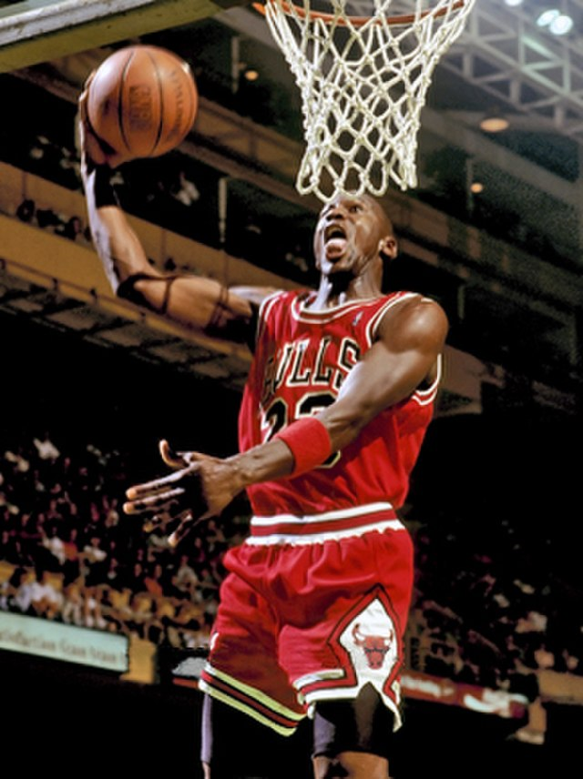
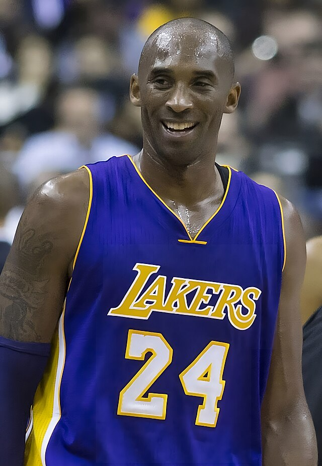
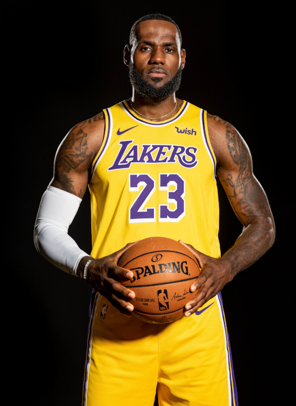
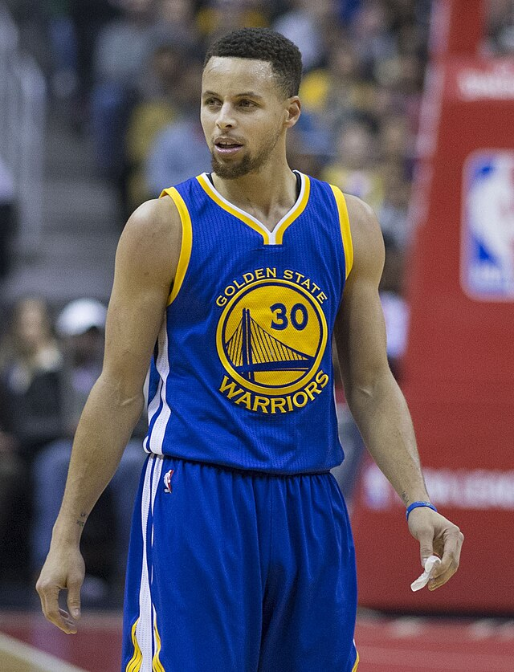
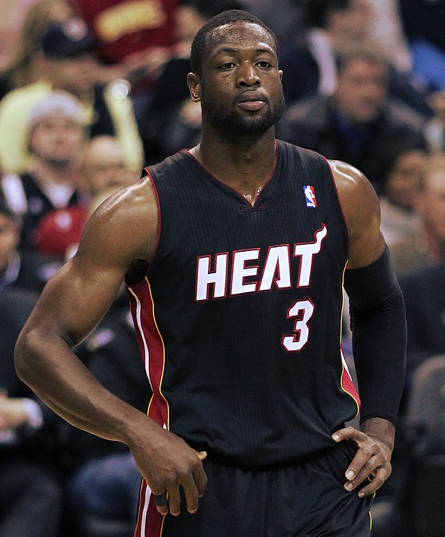
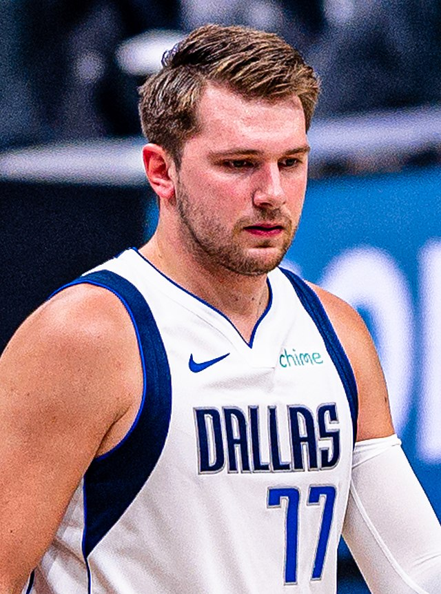

1. Michael Jordan
Considerado por muitos o maior jogador de todos os tempos, conquistou 6 títulos da NBA pelo Chicago Bulls e se tornou um ícone global.
Altura: 1,98m
2. Kobe Bryant
Lenda do Los Angeles Lakers, foi 5 vezes campeão da NBA e deixou um legado de dedicação e inspiração dentro e fora das quadras.
Altura: 1,98m
3. Lebron James
Um dos maiores jogadores ainda em atividade, campeão em múltiplos times e exemplo de longevidade e impacto dentro e fora das quadras.
Altura: 2,06m
4. Stephen Curry
Texto: Conhecido como o maior arremessador da história, revolucionou o basquete moderno com seu estilo de jogo baseado em bolas de 3 pontos.
Altura: 1,88m
5. Dwyane Wade
Amplamente considerado um dos maiores ala-armadores da história da NBA,ele passou a maior parte de sua carreira de 16 anos jogando pelo Miami Heat, tem uma incrível capacidade de atuar e definir partidas em momentos cruciais, o que lhe rendeu o apelido de "Flash"
Altura: 1,93m
6. Luka Dončić
 É considerado um dos jogadores mais promissores da NBA na atualidade. Em seu primeiro ano foi escolhido o Rookie of the year da liga e em 3 anos já foi selecionado duas vezes para o NBA All-Star Game.
Altura: 2,01m